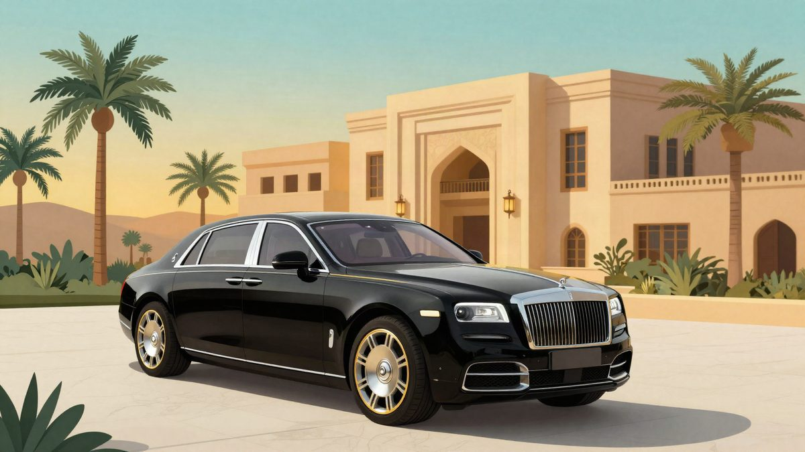

BYD Yangwang Altior: luksuzni sedan s četiri sjedala, megavatnim punjenjem i dosegom preko 1.000 km

BYD je u Abu Dhabiju predstavio luksuzni sedan Yangwang Altior s četiri sjedala, a prva serija ograničena je na 399 primjeraka. Očekivana cijena je oko 260.000 eura, polog oko 38.000 eura. BYD tvrdi da doseg premašuje 1.000 km po kineskom CLTC ciklusu, a podaci o pogonu još nisu objavljeni.
BYD je u Abu Dhabiju predstavio Yangwang Altior, luksuzni sedan kojim cilja na Mercedes-Maybach S-Class, Bentley Flying Spur, Rolls-Royce Ghost i Aurus Senat. Prva verzija ima četiri sjedala i proizvodit će se u ograničenoj seriji od 399 primjeraka. Peterosjed stiže kasnije.
Predbilježbe su već otvorene, a polog je 300.000 juana (oko 38.000 eura). Očekivana cijena iznosi 2,08 milijuna juana (oko 260.000 eura).
Dimenzije i salon
Altior je dug 5,6 m i širok 2,03 m, a međuosovinski razmak iznosi 3,5 m. Gotovo sav prostor između osovina pripao je putnicima straga. Za njih su predviđena dva zasebna sjedala s osloncima za noge, držačima za čaše i središnjom konzolom s upravljačkim sustavom.
Vrata se otvaraju gotovo do 90 stupnjeva, a u njihove panele ugrađeni su pretinci za kišobrane. U unutrašnjosti su drvene i metalne obloge, sjedala imaju rombasti šav, a tu su i električne zastorice na prozorima, pozlaćene rešetke zvučnika i ukrasni umetci od žada.
Pogon i doseg
Točne podatke o pogonu BYD još nije objavio. Poznato je da sedan dobiva bateriju Blade 2 i podršku za BYD-ovu tehnologiju ultrabrzog punjenja snage do jednog megawatta. BYD tvrdi da doseg premašuje 1.000 km po kineskom CLTC ciklusu, koji je u pravilu optimističniji od europskog WLTP-a.
Naslov izvora spominje četiri motora, ali konkretne specifikacije snage i konfiguracije zasad nisu potvrđene.
Izvor: iXBT